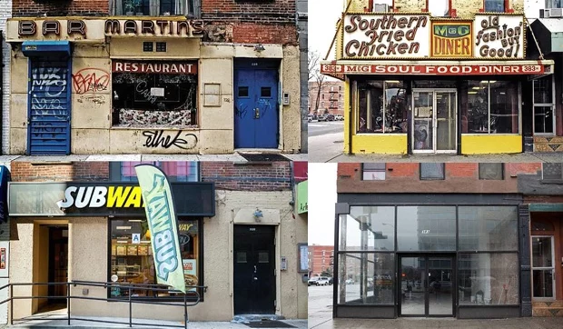

Overview
The house flipping system goes as follows ;buy a run down house in a cheap neighborhood, flip the house, sell it for a profit. No harm no foul, right? Wrong! What happens behind the scenes, depending on the community, can almost destroy the people who lived there in the property . Think about this, that run down house you bought was run down because someone couldn’t afford to live there anymore and left. Wellrun down , that house that you just flipped now raise the land value and begins to price people out. Then, houses begin to become run down and the cycle continues, until that original community that was once there isn’t there anymore. My goal is to strip away the glamour of gentrification and come up with a way to keep the integrity & community together.

Gentrification Issues
The 2019 census showed the homeless population had dropped to 3,217 — of which only 719 were living on the streets.”this quote from the Atlanta Business Chronicle gives the homeless population numbers in atlanta. Some of that population could have once lived in those torn down apartments now they have to start all over again. Nearly 20 percent of neighborhoods with lower incomes and home values have experienced gentrification since 2000, compared to only 9 percent during the 1990s. Gentrification still remains rare nationally, with only 8 percent of all neighborhoods reviewed experiencing gentrification since the 2000 Census.An analysis by Governing magazine ranked Atlanta fifth among US cities experiencing the most gentrification, with more than 46% of its census tracts currently gentrifying. According to the city, median rents are up 28% since 2000, compared with just 9% nationwide over the same timespan.

Solutions
In my interview with Natalyn Archibong, I asked about her Stance on pricing out legacy families?, she responded with “the East Lake Neighbor in Need Program - helping neighbors maintain homes with dignity (other neighborhoods followed - Kirkwood Cares.). Also about the potential to freeze tax initiatives”. Kirkwood care is a fantastic organization that if your in the kirkwood neighborhood. It helps with the damage to people's houses and gives them a place to stay when it is no longer available while home damages are being paid for.